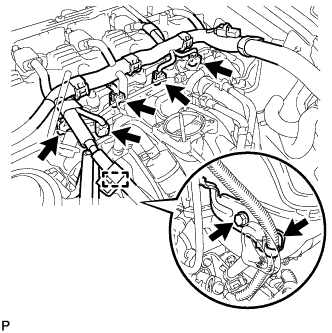

ТОПЛИВНАЯ ФОРСУНКА > СНЯТИЕ |
| 1. СБРОСЬТЕ ДАВЛЕНИЕ В ТОПЛИВНОЙ СИСТЕМЕ |
Сбросьте давление в топливной системе (Нажмите здесь).
| 2. ОТСОЕДИНИТЕ ПРОВОД ОТ ОТРИЦАТЕЛЬНОГО ВЫВОДА АККУМУЛЯТОРНОЙ БАТАРЕИ |
| 3. СНИМИТЕ КОРПУС ДРОССЕЛЬНОЙ ЗАСЛОНКИ С ЭЛЕКТРОДВИГАТЕЛЕМ В СБОРЕ |
Снимите корпус дроссельной заслонки с электродвигателем в сборе (Нажмите здесь).
| 4. ОТСОЕДИНИТЕ ТОПЛИВНЫЙ ШЛАНГ |
Отсоедините топливный шланг (Нажмите здесь).
| 5. ОТСОЕДИНИТЕ ТОПЛИВНЫЙ ШЛАНГ № 2 |
 |
Отсоедините топливный шланг № 2.
| 6. СНИМИТЕ ДЕМПФЕР ПУЛЬСАЦИЙ ДАВЛЕНИЯ В ТОПЛИВНОЙ СИСТЕМЕ В СБОРЕ |
Отверните 2 болта и снимите демпфер пульсаций давления в топливной системе.
| 7. СНИМИТЕ ТОПЛИВНУЮ РАМПУ С ТОПЛИВНОЙ ФОРСУНКОЙ |
|  |
Отсоедините 4 разъема форсунок.
Отсоедините разъем электровакуумного клапана продувки (VSV).
Освободите зажим жгута проводов.
Выверните болт и снимите кронштейн зажима жгута проводов.
Выверните болт и отсоедините электровакуумный клапан продувки.
Выверните 2 болта и снимите топливную рампу вместе с топливными форсунками.
Снимите 2 распорных втулки топливной рампы № 1.
Снимите 4 виброизолятора форсунки.
С помощью отвертки снимите 4 распорные втулки.
| 8. СНИМИТЕ ТОПЛИВНУЮ ФОРСУНКУ В СБОРЕ |
Снимите 4 топливных форсунки с топливной рампы.
 | Вытяните |